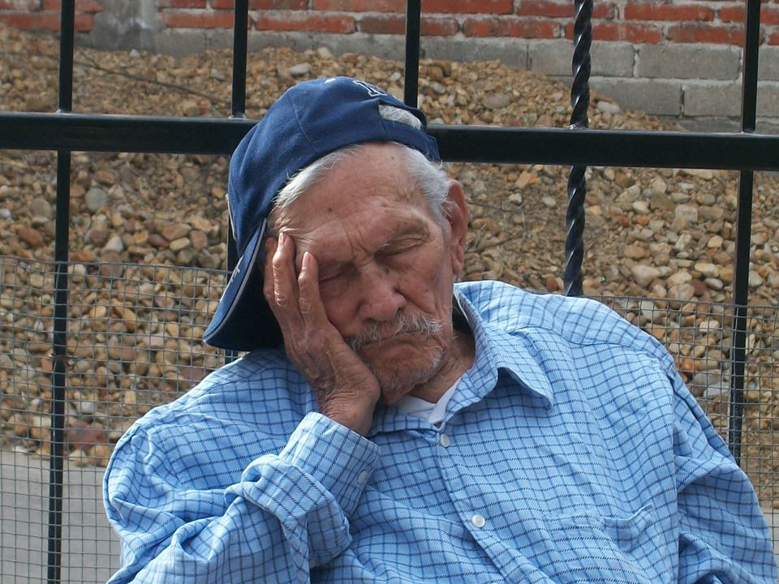

老年 與 睡眠
很多老人都會覺得自己有睡眠問題，擔心自己睡眠不足，會影響身體健康。其實，若老人對睡眠有正確的認識後，或許問題就能迎刃而解。老人常見的睡眠困擾；包括：不容易入睡、睡眠中斷、睡眠總時數的不足、夜間醒來、白天打瞌睡、晨間早醒。睡眠依腦波，可以分為動眼期及非動眼期，而非動眼期又可分為淺睡期（第一期及第二期）和深睡期（第三期及第四期）。隨著年齡增加，老人的睡眠品質和睡眠時數在一天之內的分佈，確實有些變化。睡眠總時數及深睡期會隨之減少，然而睡眠中斷的情形卻隨之增加，有些老人睡眠週期也會提早，因而吃完晚餐後就想睡覺且天未亮就起床。
總而言之，老人並非不需要睡眠，也並非如一般人以為的「老人睡眠的需求是較低」；而是因為正常老化睡眠型態變化外，老人還有生活內容的改變、疾病及身體功能的退化等，都可能會導致睡眠品質或時數下降（張、李，2003）。很多老人認為睡得少，就是有失眠問題；不少老人都認為一定要睡滿八小時的睡眠，才不會影響身體的健康。因此，老人都會盡量早點上床就寢，希望可以有較多的睡眠時間；其實，這樣不但不會增加「真正」睡眠的時間，反而會影響到睡眠品質（如延長起床時間但又不能入睡）；睡眠時間的長短，每個人都不相同的；老人只要在睡醒起床後覺得疲倦感已消除或精神充沛，則代表晚上的睡眠時間已經足夠了，不需要硬性要求自己一定要有八小時的睡眠；因此，老人應該到了有睡意時才上床睡覺（香港特別行政區政府衛生署，2008）。
參考資料:張書森、李明濱（2003）．老年人之睡眠障礙．台灣醫學，7（4）， 602－609。;